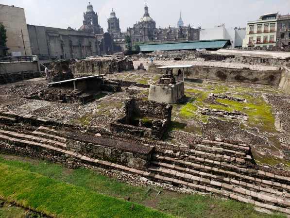

El Mueso del Templo Mayor, started in 1987, showcases the ruins of the main temple of the Mexica people in their capital city of Tenochtitlan. It was originally built during the mid-twelvth century and is now located in the now Seminario 8 located in Mexico City's Historic Distric. Its architectural style belongs to the late Postclassic period of Mesoamerica and the temple was named the Huēyi Teōcalli in the Nahuatl language. It will host Nuahtl speaking courses for Huitz.